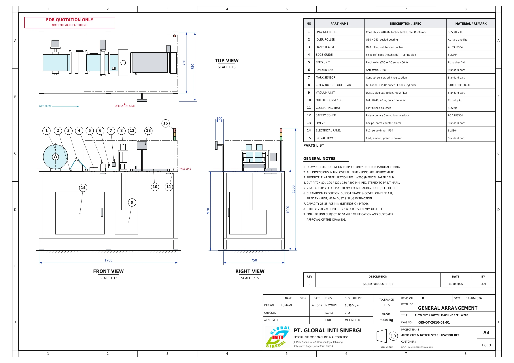
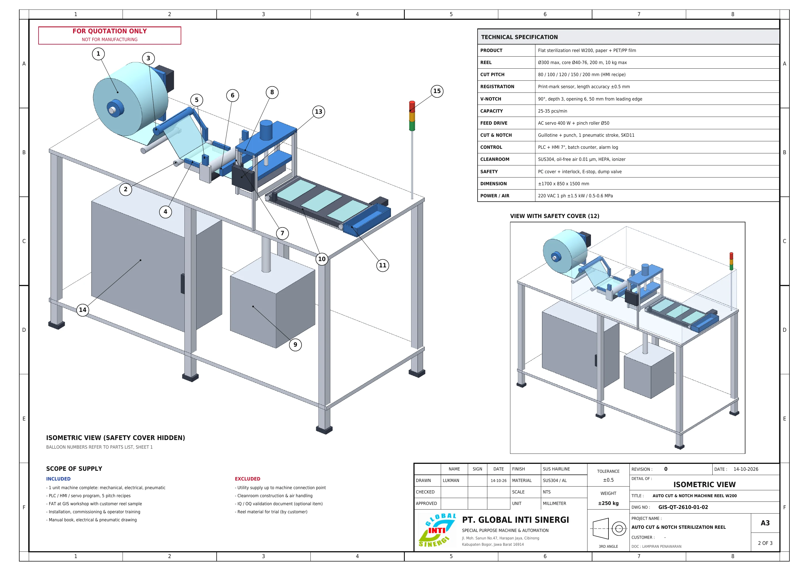
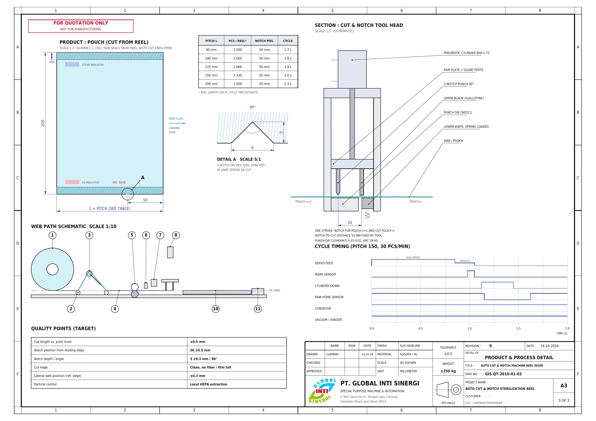

Gambar konsep · Rev K0
Auto Cut & Notch — Sterilization Reel 200
Mesin potong otomatis untuk flat reel sterilisasi lebar 200 mm. Panjang potong dikunci ke tanda cetak (pitch 80 / 100 / 120 / 150 / 200 mm), notch V dibuat dalam stroke yang sama dengan pemotongan, konstruksi untuk cleanroom.
Unit mm · Skala NTS
Tanggal 13-10-2026
Status Konsep untuk diskusi
Tanggal 13-10-2026
Status Konsep untuk diskusi
01Layout umum
Web mengalir dari kiri ke kanan. Sisi operator dan tepi referensi (sisi notch) berada di depan mesin, yaitu sisi bawah pada tampak atas.
Tampak atas
Tampak samping (depan)
02Model 3D
Putar dengan drag, zoom dengan scroll atau pinch. Arahkan kursor ke daftar komponen untuk menandai bagiannya di model. Animasi menunjukkan siklus feed → stroke punch + potong → pouch keluar.
Drag: putar · Shift/klik kanan: geser
Komponen
03Detail proses
Produk: pouch
Notch selalu 50 mm dari tepi depan, untuk semua pitch. Asumsi: "tepi" yang dimaksud adalah tepi depan searah aliran web. KONFIRMASI
Tool head: punch + pisau
- Servo feed cepat, lalu pelan saat mencari tanda cetak.
- Mark sensor terpicu, servo berhenti di offset resep.
- Satu stroke turun: notch untuk pouch n+1, potong pouch n.
- Ram naik, sensor home pisau aktif.
- Conveyor membawa pouch ke tray, counter +1.
04Data teknis konsep
| Material | Flat reel sterilisasi kertas medis + film PET/PP, lebar 200 |
|---|---|
| Pitch potong | 80 / 100 / 120 / 150 / 200 mm, resep di HMI, terkunci ke tanda cetak |
| Akurasi panjang | ±0,5 mm terhadap tanda cetak |
| Notch | V 90°, kedalaman 3, bukaan 6, berjarak 50 dari tepi depan, sisi referensi |
| Kapasitas | 25–35 pcs/menit |
| Reel | Ø luar maks 300, core 40–76 (cone chuck), berat maks 10 kg VERIFIKASI |
| Penggerak | Servo 400 W untuk feed, silinder pneumatik untuk tool head, motor conveyor 40 W |
| Kontrol | PLC output pulsa + HMI 7", counter batch, alarm reel habis dan web putus |
| Cleanroom | Rangka dan cover SUS304, udara oil-free 0,01 µm, exhaust disalurkan, vakum HEPA, ionizer, panel IP54 KELAS? |
| Safety | Cover polikarbonat dengan interlock, E-stop, dump valve pneumatik, signal tower |
| Dimensi | ±1700 × 750 (850 dengan HMI) × 1500 mm, berat estimasi ±250 kg |
| Utilitas | 220 V 1 fasa ±1,5 kW, udara 0,5–0,6 MPa |
05Drawing penawaran
Lampiran penawaran GIS-QT-2610-01, 3 lembar A3, Rev 0. Klik lembar untuk memperbesar.



PerusahaanPT GLOBAL INTI SINERGI
JudulAuto Cut & Notch — Sterilization Reel 200
Unitmm
SkalaNTS
RevK0
Lembar1 / 1